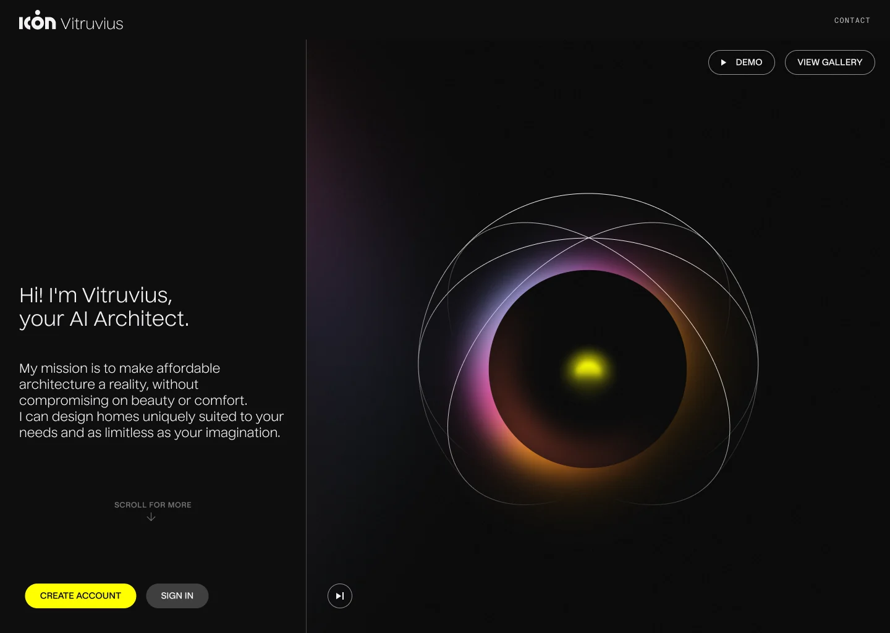
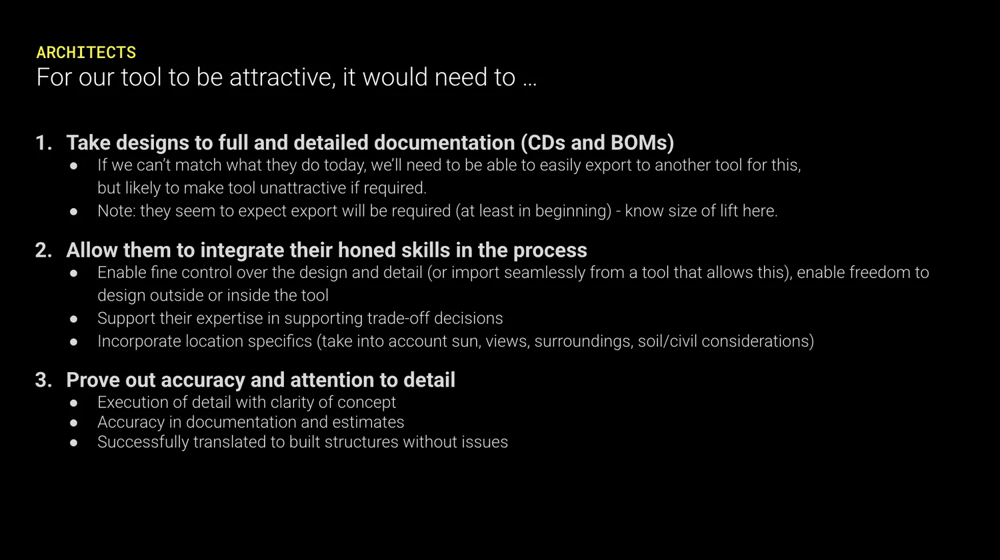
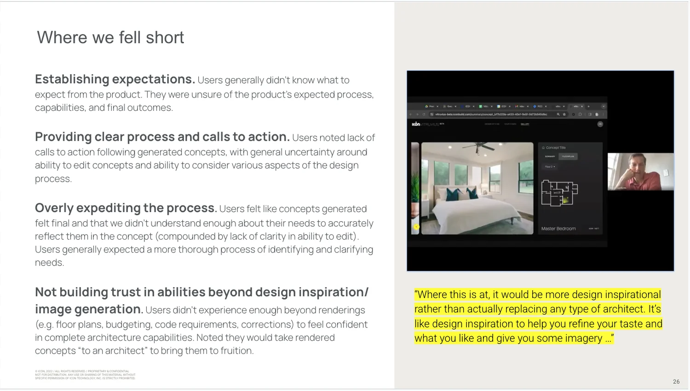
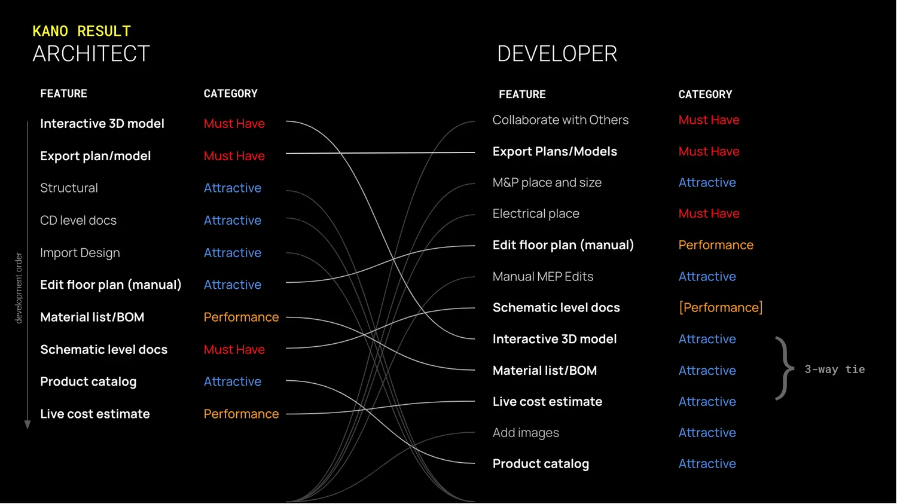
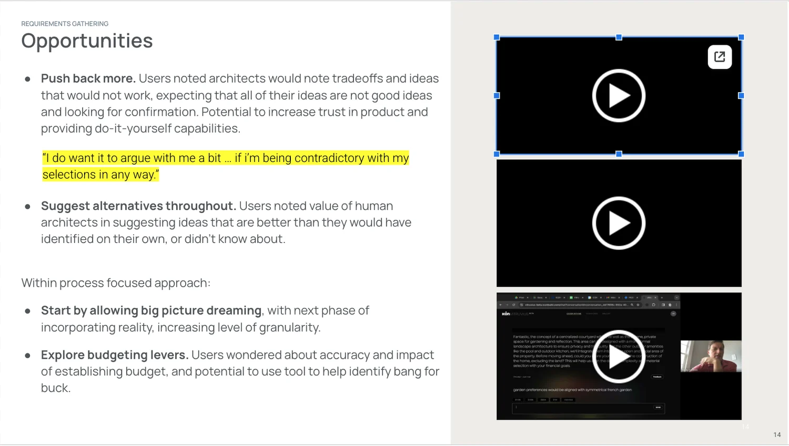
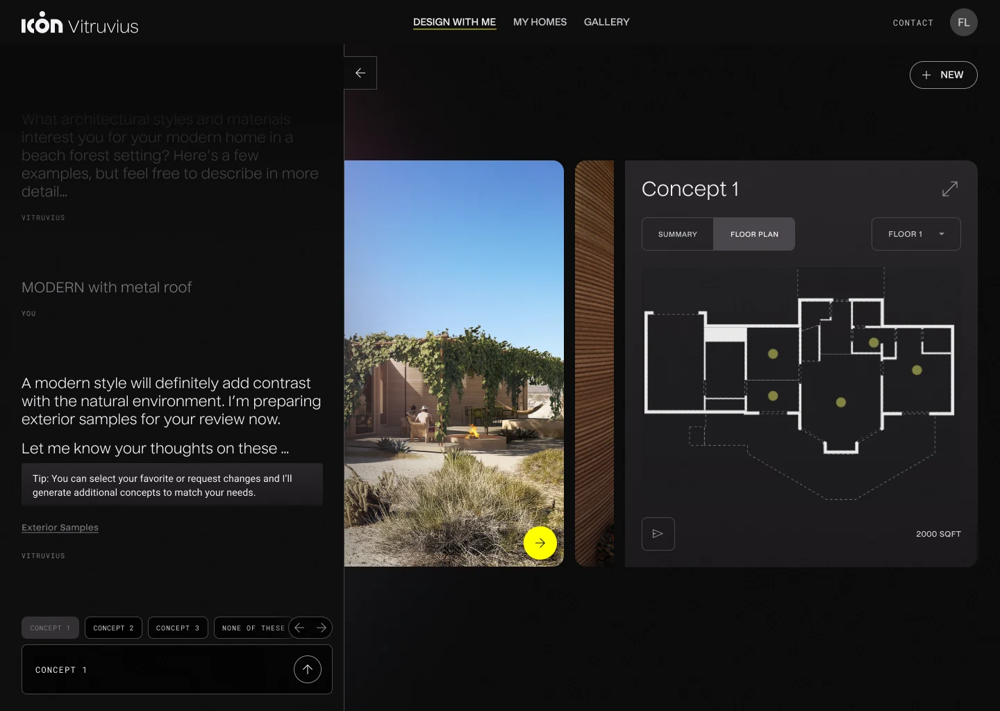
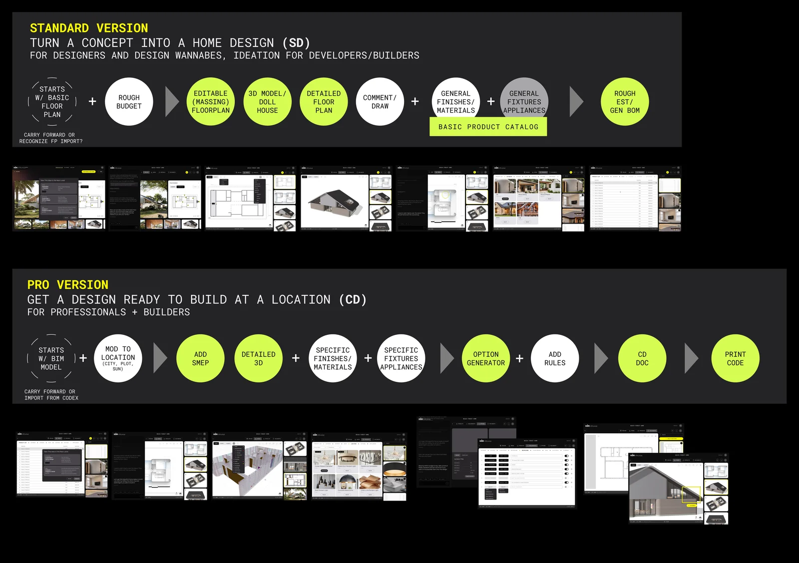
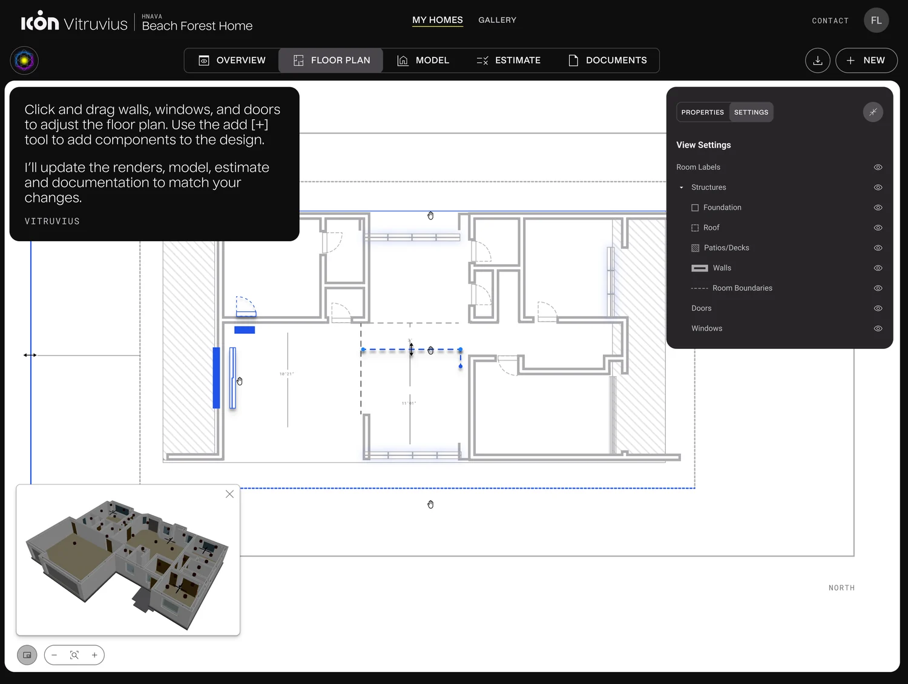

Vitruvius was ICON's early generative-AI product: describe your dream home in natural language, and an LLM-based system returns your custom home design. It was rushed to a public beta for a marketing milestone and before the experience was ready. While its novel approach was lauded, the seams showed when in serious use: floor plans that didn't match the 3D models, nonsensical outputs, and challenging navigation and AI interactions.
For a tool promising actual home designs, that gap between what the AI promised and what it delivered was eroding trust fast. I was already at ICON and joined the project team just after launch to evaluate what was really happening, improve it, and define what it could honestly become.

I ran moderated usability sessions across homeowners, builders, and industry-adjacent users, then delivered findings with clear severity ratings, primary- and secondary-customer priority clarity, and feature prioritization, so the team knew what to fix first and for whom.




I redesigned several elements of the core AI-interaction and navigation patterns, simplified the key flows, and created a responsive and mobile approach, so the product people could already reach was less confusing and less brittle.

I designed a vision that moved Vitruvius from novelty toward a real tool: interactive 3D massing, editable floor plans, integrated documentation and BOMs, real material selection, and a tiered monetization strategy to support it.

Throughout, I framed where a person should hold the decisions that shape the result and where the AI should assist, so people had more control of the outcome and stepped into the loop at the moments that actually mattered, rather than the tool pretending it was further along than it was.

The work delivered immediate UX improvements for the live beta, a clear, prioritized path toward product maturity, and a documented strategy for how AI-human design could feel trustworthy and usable. Development was later paused over the real technical challenge of generating architecture-grade outputs, a candid lesson in the messy space where innovation meets reality, and in knowing when a product is ready for public promotion.
Development was later paused over the challenge of generating architecture-grade outputs. I'm including it because the honest version, where the tool ran ahead of the technology, is the part worth learning from.
Whether you're building something complex, or just need clarity on where to start.